DanceSport Player — User Manual
This manual walks through the player the way it is used at a tournament or a dance evening: set it up once, load the playlists, then run the music on the floor.
The whole manual is also a single web page, manual.html. After changing a chapter, rebuild it with py -m tools.build_manual_html.
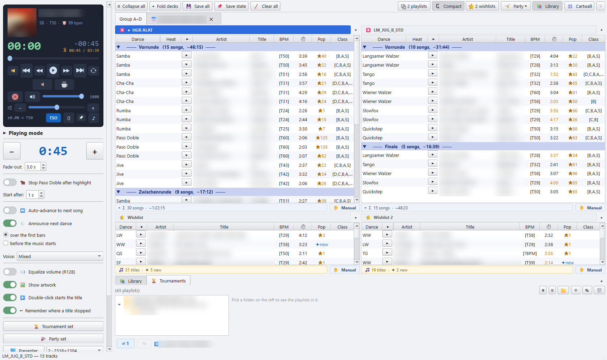
Chapters
- Getting started: the player, its folders, the analysis, and a tour of the main window.
- Library and Tournaments: browsing and filtering the music library, and the tree of your tournament playlists.
- Playlists: the decks as running orders, the Party panel, wishlists, loading and saving
.m3uplaylists, and playlists written on another PC. - Playing the evening: the player card, the Playing panel, play sets, announcements, the Paso Doble stop, the cartwall and the presenter screen.
- Tags: the 🏷 tag editor, ★ ratings, the Custom field, and writing tags into the MP3.
- Settings: paths, the look (themes, looks of your own, accent colour, language), analysis and play sets.
- Keyboard and mouse: every shortcut in one list.
Installation and the configuration files are described in the project README.
Conventions
- Buttons and menu entries are written as they appear in the app, icon included where it helps to find them: 🎛 Cartwall, 📚 Library.
- Right-click ▸ 💾 Save as M3U… means: right-click, then pick that entry from the context menu.
- Nearly every control has a tooltip. When this manual is short on a detail, hover over the control.
- F1 in the app opens the cheat sheet of all shortcuts. It is the same list as chapter 7.
- The app is in English or German (⚙ Settings ▸ 🎨 Look). The screenshots show the English interface. On it the dance and round names are English too: Slow Waltz, Round 1, Final. Tick Keep the German dance and round names below the language to keep Langsamer Walzer, Vorrunde, Finale; the presenter screen and the recorded announcements are then German as well. Playlists and exports keep the German words either way.
Terms
| Term | Meaning |
|---|---|
| Deck | One playlist on the screen, labelled A, B, C and so on. It holds the running order of one competition or one part of the evening. |
| Party panel | A long playlist for a social evening, between the decks and the wishlists. |
| Wishlist | A flat list of titles you park for later: requests, a new album. It sits under the decks. |
| Round | Vorrunde, Zwischenrunde, Semifinale, Finale. A competition playlist is grouped into its rounds. |
| Heat | One group of couples dancing at the same time. Every heat of a round gets its own title per dance. |
| Takt / BPM | Tempo in bars per minute, as the TSO defines it (Samba 50–52, Slow Waltz 28–30). [T51] in a deck means 51 bars per minute. |
| TSO range | The tempo the tournament rules allow for a dance. |
1 · Getting started
The person running the music at a tournament does not plan anything. They load a finished playlist and play it: timed, with the Paso Doble cut, the spoken dance announcements, the presenter screen and the cartwall. The DanceSport Player is the app for exactly that job.
You get it in two ways:
- the player build,
DanceSport-Player, a program of its own for the venue PC; - the full app set to the app mode Player only, under ⚙ Settings ▸ 📁 Paths & search ▸ App mode.
Both look and work the same. The window is titled DanceSport Player and opens on the ▶ Playing side.
The first start
On the first start the app opens on a layout for the venue:
- no playlist decks and no wishlists;
- an empty Party list, ready for an
.m3uto be dropped on it; - the 📚 library open;
- the 🎛 cartwall closed;
- the 🎉 Party set on: full length, auto-advance, no pause, equalized volume. See Play sets.
This happens only once. From the second start on, the app opens as you left it.
Point the app at your music
Open ⚙ Settings. The button is at the bottom of the Playing panel. The first tab holds the folders:
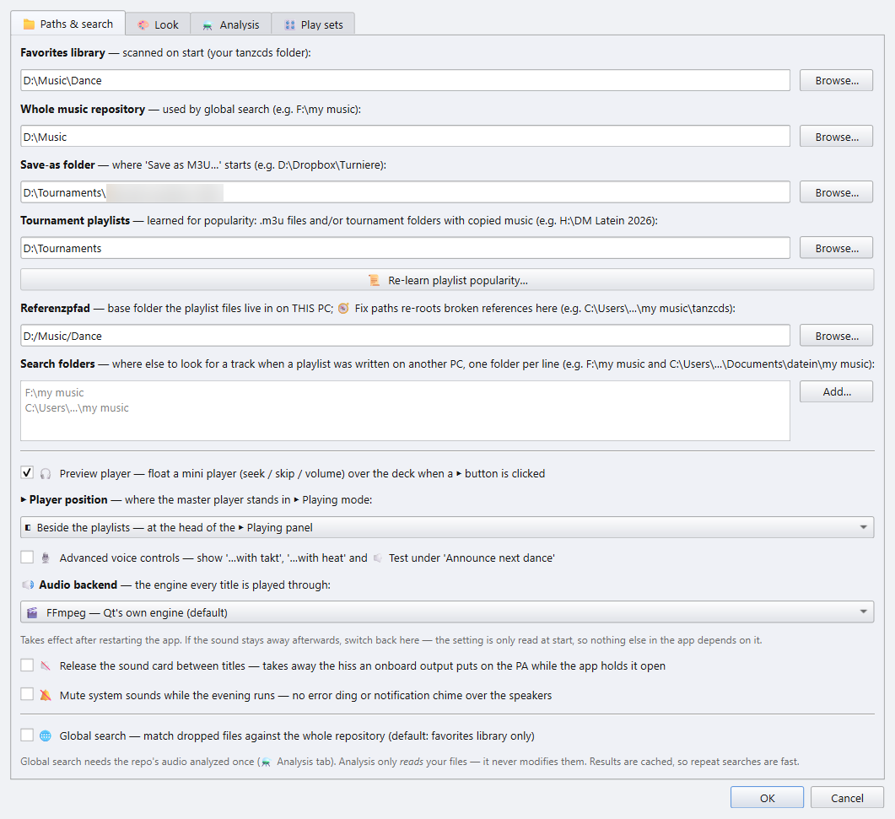
| Field | What it is for |
|---|---|
| Favorites library | Your tournament music folder. It is scanned on every start and fills the 📚 library. |
| Save-as folder | Where Save as M3U… starts. |
| Tournament playlists | Your existing tournament .m3u files. The Pop column counts in how many of them a title appears. |
| Referenzpfad | The folder the music lives in on this PC. A playlist written on another PC is moved onto it when you load it, see chapter 3. |
| Search folders | More places to look for a track when a playlist was written on another PC. One folder per line. |
The rest of this tab is covered in Settings.
The first scan and the analysis
On start the app scans the Favorites library and shows a loading dialog. Titles and tags are cached, so only the first scan of a large library takes long.
Three features need a short analysis once per track:
- 🔊 Equalize volume needs the loudness,
- the 🐂 Paso Doble stop needs the highlights,
- skipping silence at the start and end needs the silences.
Start it with 🧱 Build ALL caches… in ⚙ Settings ▸ ⚗ Analysis. The analysis only reads your files and can be cancelled. Whatever is already cached is reused.
Analyse at home, play at the venue
The analysis takes time you may not have on the day. Run it at home, then copy audio_features.db next to DanceSport-Player.exe on the venue PC. The player reads the stored values and needs no analysis at the venue.
A tour of the main window
Left: the side panel. The player card on top, the Playing panel under it. Both are described in chapter 4.
Top: the toolbar. On narrow screens the buttons shrink to their icons. Hover over one for its full name.
| Button | Does |
|---|---|
| ⊟ Collapse all | Collapses every round and dance header. Click again to open them. |
| ▴ Fold decks | Folds every deck and wishlist to a header tab. |
| 💾 Save all | Writes every non-empty deck to its own .m3u. |
| 📌 Save state | Saves the whole session now. This also happens by itself on every edit and on close. |
| 🧹 Clear all | Empties every deck. Wishlists are kept. |
| ⧉ n playlists | Cycles through the number of decks on screen. A right click goes backwards. |
| 🗜 Compact | Cycles the header view: full → compact → no groups → numbered. |
| ⭐ n wishlists | Cycles the wishlist area: off → 1 → 2 → 3 → 4 → 2×2. |
| 🤸 Party ▾ | Shows or hides the Party panel. |
| 📚 Library | Shows or hides the library and tournaments pane. |
| 🎛 Cartwall | Shows or hides the sample-pad wall. |
| ❔ | The shortcut cheat sheet (F1). |
Middle: the decks. Each deck is one playlist, see chapter 3.
Below the decks: the Party panel and the wishlists, and under them the 📚 Library / 🏆 Tournaments pane, see chapter 2.
Bottom:
- the undo and redo buttons, with the number of steps they can go back;
- the title that is cued on the player;
- the status bar.
Everything you see is saved as you work: decks, wishlists, the window layout and the fold state. The next start brings it back exactly as it was.
The player build
The player build is about 220 MB. It is built with build_player.bat; see BUILD.md in the project. It keeps everything a tournament runs on: playback and the ±16 % tempo fader, equalized volume, the Paso Doble highlight detection, the silence detection, the cartwall, the library and the announcements.
Run from the full app in player mode, the app also offers 🖨 Print, a PDF of the running order, and up to eight decks.
Next: Library and Tournaments
2 · Library and Tournaments
Manual index · previous: Getting started
The pane under the wishlists has two tabs. Show or hide it with 📚 Library in the toolbar. Drag the splitter above it to give it more room.
📚 Library
The whole Favorites library as one sortable table. Filter it, then drag titles into a deck, the Party panel or a wishlist.
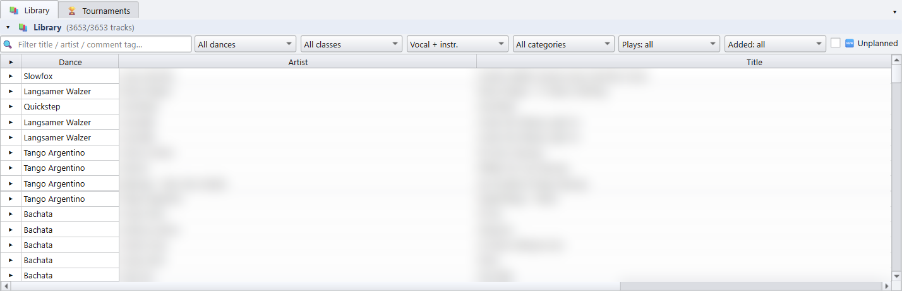
| Filter | Shows |
|---|---|
| 🔍 text field | Titles whose title, artist or comment tag contains the text. Tags are markers like vocal_f, classic, eintanzen. |
| All dances | One dance, or all Standard or all Latin dances. |
| All classes | Titles suited to that start class. Titles without a class tag always show. |
| Vocal + instr. | Only 🎤 vocal or only 🎻 instrumental titles. |
| All categories | 🏆 Tournament only hides anthems, background music, wrong-tempo files, duplicates and seasonal folders. You can also pick one of those categories, which is handy for a party. |
| Plays: all | ✦ Never played, ★ Rarely, ★ Proven, or 📅 Not since 1 y (played, but not in any playlist of the last year). |
| Added: all | Files created in the last 30 or 90 days, or the last 12 or 18 months. Combine it with ✦ Never played to find what you copied in but never used. |
| 🆕 Unplanned | Only titles that are in none of the open decks. |
- ▶ in a row plays the title on the player. Space does the same for the selected row.
- Double-click a row to open the file in your external audio player.
- Right-click a row for 📋 Copy file path, 📂 Show in Explorer, 🎧 Open in external player, 🏷 Re-read MP3 tags and 🏷 Edit tags…. With several rows selected, the tag editor edits them all. See chapter 5.
- Right-click the column header to choose the columns, or to switch to short dance names (LW, SB). The ★ rating and Custom columns are hidden at first and can be shown here. Map Custom to an MP3 tag… fills Custom from a tag of your choice.
🏆 Tournaments
Your archive of tournament playlists, sorted the way you think about them: a season, a weekend, a venue, a competition. The folders are only labels. The 🎵 entries point at .m3u files wherever those are on disk.
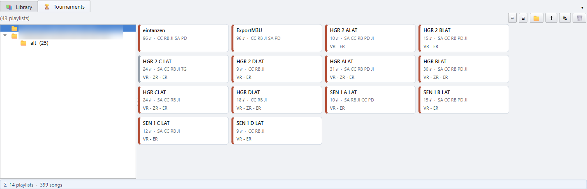
Filling the tree
- Drop
.m3ufiles or a whole folder from Explorer onto the tree. - 📁 creates a folder: a day, a venue, a competition.
- ＋ adds playlist files to the selected folder. Right-click the tree ▸ 📂 Add a folder of playlists… files a whole folder from disk as a branch, with every
.m3uunder it, the same way a folder dropped from Explorer is filed. - ✎ (or F2) renames the selected entry. 🗑 (or Del) removes it from the tree. The file on disk is not touched. In the slots view these act on the picked slot; click the folder row to act on the folder.
- Ctrl + A marks everything: every slot of the folder, or every entry of the tree in the tracks view. Del and 🗑 then remove all marked entries after one question.
- ⊟ collapses every folder, which helps with a long season.
- From a deck: right-click ▸ 🏆 Save and add to Tournaments… saves the playlist and files it here. It goes into the selected folder, next to the selected playlist, or at the root. The new entry is picked and shown right away.
Slots view
Pick a folder on the left and its playlists appear on the right as slots. Each slot shows:
- the playlist name,
- the number of titles (♪),
- the dances,
- the rounds it contains (VR = Vorrunde, ZR = Zwischenrunde, ER = Endrunde).
- Drag a slot onto a deck to load that playlist there. Dragging one of several marked slots carries them all; they go into the free decks, one each. A plain click narrows the marking to one slot.
- Double-click a slot to load it onto the focused deck.
- Right-click a slot for ▶ Load onto the focused deck, 🎵 Show its tracks, ✎ Rename and 🗑 Remove from tree.
Tracks view
▤ switches to the tracks view. The tree now lists the playlists themselves, and the right side shows the titles of the picked playlist in playing order, with their round and dance. Rounds are written short, the way the slots write them (VR, 1ZR, ER). Hover over one for the full name.
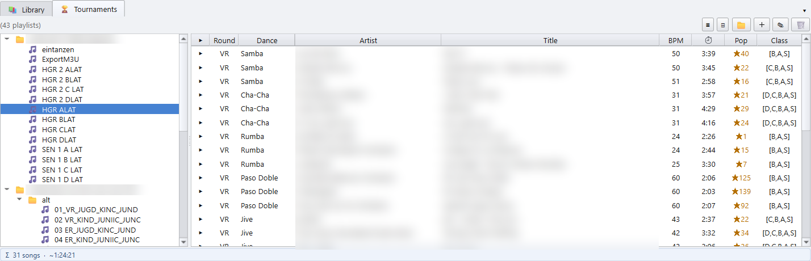
- ▶ or Space plays a title. A double-click opens it in your external player.
- Drag titles onto a deck, the Party panel or a wishlist.
- The bar underneath shows the songs and total play time. Titles that the library doesn't know are counted, but add no time.
▦ switches back to the slots.
Next: Playlists
3 · Playlists
Manual index · previous: Library and Tournaments
The player holds its music in three kinds of lists:
- the decks, one per competition or per part of the evening;
- the Party panel, for a long social evening;
- the wishlists, for titles you want to keep at hand.
The decks
⧉ n playlists in the toolbar sets how many decks are on screen. Each deck is a running order: the titles play from top to bottom.
- A competition playlist is still shown in its rounds and dances. Click a round or dance header to collapse it.
- Any row can be dragged anywhere, also into another deck.
- A title dropped onto a deck, from the library, a wishlist or Explorer, is added where it was dropped. It never replaces the title that was there.
- Del takes the selected titles out of the running order, after asking.
- Ctrl + Z / Ctrl + Y undo and redo every change. The ↶ / ↷ buttons at the bottom show how many steps are available.
- Double-click the deck title to rename it. ▾ in the header folds the deck to a tab.
The columns:
- Dance / Heat: which dance and heat the row is.
- ▶: plays or stops exactly this title.
- BPM: the tempo in bars per minute, as written in the file (
[T51]).[?BPM]means the file carries no tempo. - ⏱: the length. It is orange when the title is shorter than the play length, or when 5 s or more of silence at an edge will be skipped.
- Pop:
★58means the title is in 58 of your tournament playlists. ✦ new means it is in none. - Class: the class tags from the MP3 comment, for example
[B,A,S].
Two more columns are hidden at first. Right-click the column header to show them: ★ rates a title with a click, and Custom holds a free text per title. Both are described in chapter 5.
Row colours:
- an orange row with ❗ is marked, for example as a title to swap later (Ctrl + M);
- a red title with ❗ points at a file that is gone.
The bar under the deck shows the Σ song count and total time. Click ▸ for the count per dance. The ✋ Manual / ⏭ Auto switch sets whether the deck plays on by itself, see chapter 4.
Right-click a title for 🏷 Re-read MP3 tags, 🏷 Edit tags… (see chapter 5), 📋 Copy file path, 📂 Show in Explorer and the save and import entries below.
🤸 The Party panel
The Party panel holds one long list for a social evening. It sits between the decks and the wishlists. 🤸 Party ▾ in the toolbar shows or hides it, and ▾ in its header folds it.
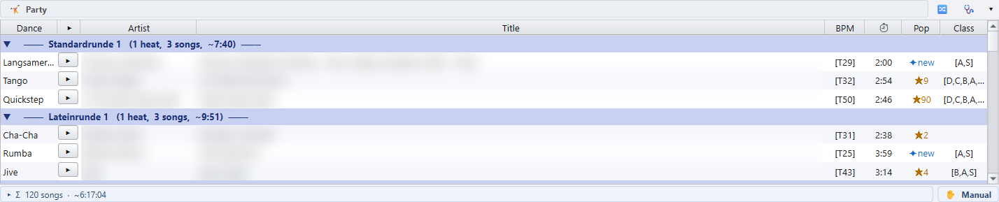
- Drop an
.m3uonto the panel to load it. The panel is named after the file. A competition running order dropped here is split into the rounds it is played in, such as Vorrunde and Finale. - A list built in rounds is grouped by them, for example Standardrunde, Lateinrunde and Socialrunde.
- ⇅ Swap these two titles (right-click, or Alt + S) swaps two selected titles of the same dance, so every round keeps its dances.
Playing from the panel switches to the 🎉 Party set by itself: full length, auto-advance, no pause, see chapter 4.
⭐ Wishlists
A wishlist is a flat list of titles you want to keep at hand: requests from the floor, a new album you want to try.
- Drag titles in from a deck, the library or Explorer. Drag them out onto a deck.
- ⭐ n wishlists in the toolbar shows up to four wishlists, or a 2×2 grid.
- Double-click the title to rename it. Drag one wishlist header onto another to swap them.
- The bar underneath counts the titles and how many are new (never played).
Wishlists are kept by 🧹 Clear all.
Loading and saving
| To | Do |
|---|---|
Load an .m3u into a deck or wishlist | Right-click ▸ 📂 Import M3U…, or drop the .m3u onto it. Several .m3u dropped at once go into the free decks, one each. |
| Load a playlist from your tournament archive | Drag its slot from 🏆 Tournaments onto a deck, see chapter 2. |
| Save the focused deck or wishlist | Ctrl + S, or right-click a title or the header ▸ 💾 Save as M3U… |
| Save it and file it in the Tournaments tree | Right-click ▸ 🏆 Save and add to Tournaments… |
| Save every deck at once | 💾 Save all in the toolbar. Each file is named after its deck title. |
On import, a deck recognises rounds, dances and heats by itself, including a final with extra backup titles. A wishlist appends the tracks as a flat list.
Playlists from another PC
A playlist file stores the full path of every track. When it was written on another PC, or the music moved to another drive, those paths are wrong. The player repairs them as it loads the playlist, with two settings in ⚙ Settings ▸ 📁 Paths & search:
- Referenzpfad: the folder the music lives in on this PC;
- Search folders: more places to look, one per line.
The app tries the Referenzpfad first, then the search folders in order. It cuts the old path from the front until the rest points at a real file under one of them. For example, D:\Musik\tanzcds\lateincd\Samba.mp3 becomes F:\my music\tanzcds\lateincd\Samba.mp3. A path is only ever changed to a file that really exists.
When a path had to change, a window says how many tracks were re-rooted and how many could not be found; Show Details lists every old and new path. A title that could not be found shows in red with ❗. Add the folder it is in under Search folders, then import the playlist again.
Next: Playing the evening
4 · Playing the evening
Manual index · previous: Playlists
The side panel holds the player card and, under it, the Playing panel. You play straight from the decks, the Party panel and the wishlists.
Starting a title
- ▶ in a row plays exactly that title. ■ stops it.
- Space pauses and resumes the player, wherever the focus is, except in a text field.
- Double-click a row either starts it at once, or only cues it: it is loaded and shown, silent, and ⏯ starts it. The switch for this is ▶️ Double-click starts the title in the Playing panel, see below.
- Ctrl + Shift + ← / → jumps to the previous or next title, and Ctrl + ← / → seeks 30 s.
Every deck has its own ✋ Manual / ⏭ Auto switch in its bottom bar:
- ⏭ Auto: a finished title is followed by the next row, so a whole round runs hands-free.
- ✋ Manual: you start every title yourself. The spoken announcement is off as well.
Each list remembers its own answer. The party list can run by itself while the competition deck next to it is started by hand.
The player card
The card at the top of the side panel shows the running title, its dance and the time left.
| Control | Does | |
|---|---|---|
| orange **\ | ◀** | Jumps back to 0:00 of this title. |
| ⏮ / ⏭ | Previous / next title. | |
| ◀◀ / ▶▶ | Back / forward 10 s. | |
| ⏯ | Pause / resume. | |
| 🔁 | Repeats this title endlessly, for when the floor is still full or a speech runs long. It works with ⏭ Auto off, too. | |
| fade button (muted speaker) | Fades the title out now, over the fade time, then ends it. | |
| ☕ | Ends the title and goes straight to the pause music. | |
| extend button | Adds another pause length when the heat change takes longer. | |
| red ⊗ | Panic: fades the music out and holds it. Nothing ends and nothing advances. ⏯ resumes at exactly that spot. | |
| 🔊 | Ducks to 20 % and back to full. The pause music comes down too. | |
| volume slider | Master volume. |
The tempo row under it:
- Tempo fader: −16 % to +16 % without changing the pitch (time stretch), for example to pull a title onto the tempo the tournament needs. − / + step it, hold them to glide. 0 or a double-click on the fader resets it.
- TSO: while on, every title is pitched to the average tempo of its dance in this round, kept inside the TSO range. A Rumba at 23 becomes T24, a Paso Doble at 57 becomes T58.
- 📌: pins the tempo, so the fader stays where you left it when the next title starts.
- ♪: tap along to the beat to measure the live tempo by hand. This is for display only and changes nothing.
The Playing panel
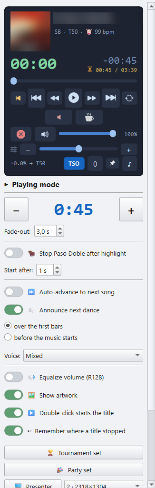
Play length and fade
- The big number is the play length: every title stops after this time. − / + change it in steps. Past the last step the title plays to its end (full). Double-click the number to type an exact length, for example
1:37. - Fade-out: the volume ramps to 0 over the last seconds.
Once the analysis has measured it, silence at the start and end of a title is skipped.
🐂 Paso Doble
🐂 Stop Paso Doble after highlight: a Paso Doble is not faded out. It stops at a highlight, the musical break the couples dance to.
- Stop after highlight picks which one, usually the 2nd.
- The highlights are detected by the analysis. When one is missing or wrong, click 🎯 Mark highlight now exactly on the highlight while the title plays. ✖ forgets the learned marks of this title.
- ✏️ Edit highlights pauses the music and suspends the stop, so you can scrub through the whole title and set its marks.
- Start after holds a Paso Doble back before the music starts, so the couples can take their position.
With the switch off, a Paso Doble is an ordinary title.
Advance and pause
- ⏭ Auto-advance to next song: the same switch as ⏭ Auto on the deck you last clicked.
- 🔁 Start again at the end: after the last title, the list starts over. Needs auto-advance.
- Pause between songs: time for the couples to change or catch their breath. Off, the next title follows at once.
- Pause music: 📂 picks one or more titles, or an
.m3u, that play during the pause. ✕ removes it. Pause music volume sets how loud it plays.
🔈 Announce next dance
The app says the next dance out loud: "Nächster Tanz: Langsamer Walzer".
- With a pause, the call comes shortly before the pause ends.
- Without a pause, the dance is named as the title starts: over the first bars (the music is ducked under the voice) or before the music starts (the music follows the call).
- Voice: Female, Male, or Mixed, which alternates the two. A dance that was never recorded is not announced.
- The call is in German on a German screen, and on an English one with Keep the German dance and round names ticked. Otherwise it is English ("Next dance: Slow Waltz"); a clip missing from the English recordings is played from the German ones.
- With the advanced voice controls on (⚙ Settings ▸ 📁 Paths & search), …with takt adds the tempo ("…, 29 Takt") and …with heat the heat number. 🔈 Test speaks a sample.
Sound and display
- 🔊 Equalize volume (R128): levels the loudness between titles. It needs the loudness analysis.
- 🖼 Show artwork: a cover next to the title on the player. It uses the playlist's own image (
#EXTIMG), a cover file in the folder, or the art in the MP3. - ▶️ Double-click starts the title: on, a double-click plays at once. Off, it only cues the title and ⏯ starts it. That is what a heat wants.
- ↩ Remember where a title stopped: a title you left starts again at that spot. The row shows ↩ mm:ss. The marks are forgotten when the app closes.
Play sets
Two buttons switch the whole panel over in one go:
- 🏆 Tournament set: 1:40 play length with a 3 s fade-out, no pause, no auto-advance, no announcement, equalized volume. It is lit gold while the panel is on those values.
- 🎉 Party set: every title at full length with a 3 s fade-out, auto-advance, no pause, no announcement and equalized volume. It is applied by itself when you play from the 🤸 Party panel, and switched back when a tournament deck takes over.
What each set contains is yours to change, in ⚙ Settings ▸ 🎛 Play sets.
🖥 Presenter
🖥 Presenter opens a second, full-screen window for a beamer or a monitor turned towards the floor. It shows the running title with its dance and the next three titles.
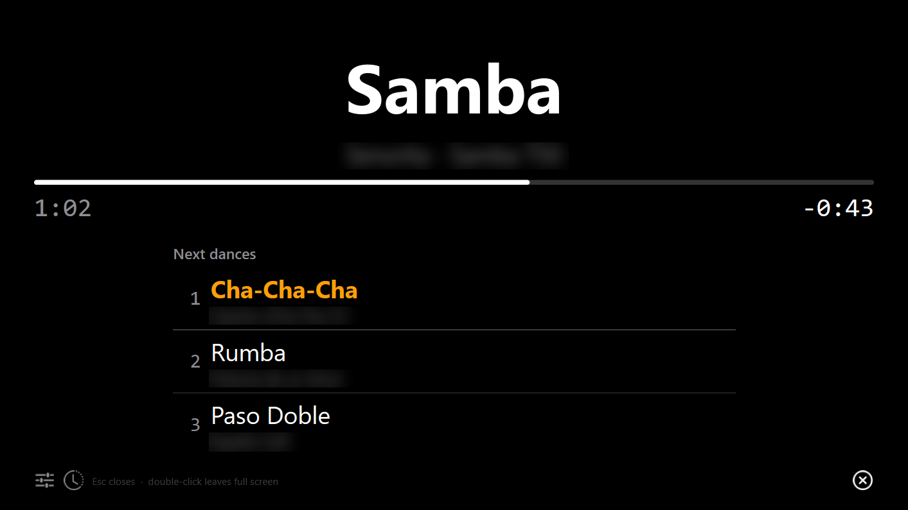
- The box next to it picks the screen.
- 🎨 Theme: Default is the black hall display. Light is cream paper with warm brown type, for a lit room.
- 🕒 holds a running order for the evening, such as dinner or the opening dance. It is a second page on the presenter. T there switches pages.
- Esc closes the presenter. A double-click on it leaves full screen.
☀ Keep the screen awake stops the screensaver and the display timeout while music plays or the presenter is open.
🎛 The cartwall
🎛 Cartwall in the toolbar shows a wall of sample pads: fanfares, a drum roll, the national anthem, a jingle for the award ceremony.
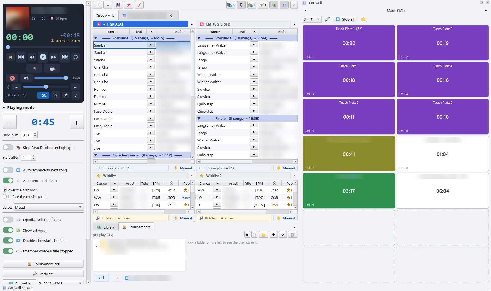
- Click a pad to fire it over the running music. Click it again to fade it out.
- Ctrl + 1 … 9 fire the first nine pads of the page on screen.
- ⏹ Stop all or Esc fades every pad out.
- ✏ unlocks the wall for building. Drop audio files on a pad to fill it. A multi-select fills the free pads after it. Drag one pad onto another to swap them. Lock the wall again before the tournament, so nothing moves by accident.
- Right-click a pad for its 🎨 colour, or Settings… for its label, volume, own shortcut key, 🔁 endless repeat, and whether it ducks the music.
- The page arrows switch pages. Double-click the page name to rename it. The size box sets the grid, for example 2 × 7. A smaller grid never loses a pad.
- 🗂 exports or imports the wall, or packs all pads onto one page.
- Drag the wall to the left or right of the window, below the decks, or out as its own window. 📌 snaps a floating wall back.
Next: Tags
6 · Settings
Manual index · previous: Tags
Open ⚙ Settings from the bottom of the Playing panel. The changes apply when you click OK. Theme, accent colour, language and the audio backend are read at start: for those the app asks for a restart.
Paths and search
The 📁 Paths & search tab.
The folders on top are described in chapter 1. Under them:
| Setting | Does |
|---|---|
| ▶ Player position | Where the player card stands: beside the playlists, at the head of the Playing panel, or above the playlists, as one wide strip over the decks. |
| 🎙 Advanced voice controls | Shows …with takt, …with heat and 🔈 Test under Announce next dance. Hidden, they keep their values. |
| 🔊 Audio backend | The engine every title is played through. On Windows: FFmpeg (the default) or Windows Media Foundation. Only change it when a title won't play or a tempo change leaves a gap. Takes effect after a restart. |
| 🔇 Release the sound card between titles | An onboard sound card puts a hiss on the PA while an app holds it open. This hands the device back after a few seconds of silence. The price is a soft click when the next title starts, so switch it on only if you hear the hiss. |
| 🔕 Mute system sounds while the evening runs | No error ding or notification chime over the speakers. The system sounds come back when you close the app. |
Look
The 🎨 Look tab.
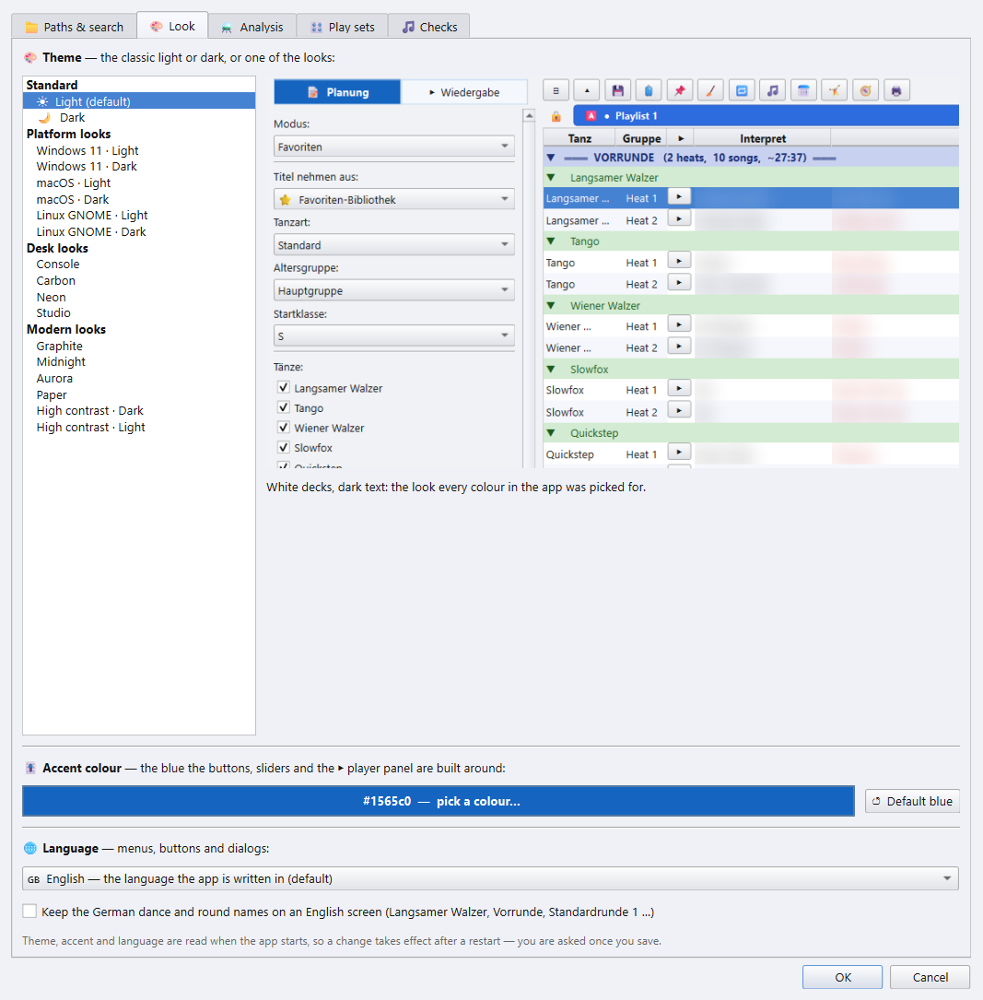
🎨 Theme: a list of every look, each with a picture of the main window in it beside the list.
- Standard: the classic Light, the default, and Dark for a dim hall. They keep the emoji on the buttons and take the accent colour below.
- Platform looks: Windows 11, macOS and Linux GNOME, each light and dark. Every look can be picked on every system.
- Desk looks: Console, Carbon, Neon and Studio, dark like a mixing desk.
- Modern looks: Graphite, Midnight, Aurora, Paper and two high-contrast looks, picked for readability first.
A look restyles the buttons, fields, tabs and menus, brings its own font and accent colour, and swaps the button emoji for drawn icons. Warnings stay red in every theme.
- Own looks: looks you make yourself, kept on this computer. ＋ New look… copies the selected look (Light and Dark start from Paper and Graphite) and opens the editor: every colour, the corners, the button, tab and focus style and the font, with a live preview beside them. Text that reads too faintly against its ground is listed as a warning. ✎ Edit… and 🗑 Delete change or remove an own look, Export… saves one as a
.jsonfile and Import… adds one someone passed on. These buttons save at once. Changing the look the app runs in offers a restart when you close the settings with OK.
- 🎚 Accent colour: the blue of the buttons, sliders and the player panel, for Light and Dark. ↺ Default blue resets it. Colours that mean something, such as red warnings, keep their hue.
- 🌐 Language: English or German.
All three take effect after a restart.
Analysis
The ⚗ Analysis tab collects every analysis. It only reads your files. Everything is cached, so a second run only does what is new.
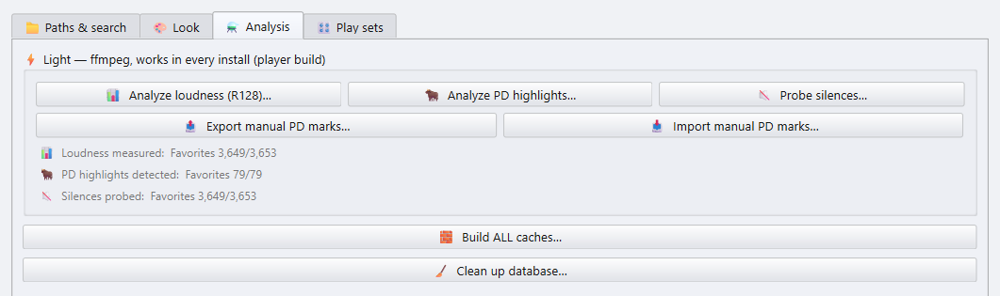
The player needs three of them:
- 📊 Analyze loudness (R128): for Equalize volume.
- 🐂 Analyze PD highlights: for the Paso Doble stop.
- 🔇 Probe silences: for skipping silence at the start and end.
📤 Export / 📥 Import manual PD marks carries the highlights you marked by hand to another PC. Run from the full app, the tab lists more analyses; the player build shows only these.
🧱 Build ALL caches… runs every analysis in turn, for a library you choose. It can be cancelled.
🧹 Clean up database… removes cached rows for files that no longer exist and compacts the database. It refuses to run when the music drive looks unmounted, so the analysis can't be wiped by accident.
Play sets
The 🎛 Play sets tab sets what the 🏆 Tournament set and 🎉 Party set buttons of the Playing panel apply (see chapter 4).
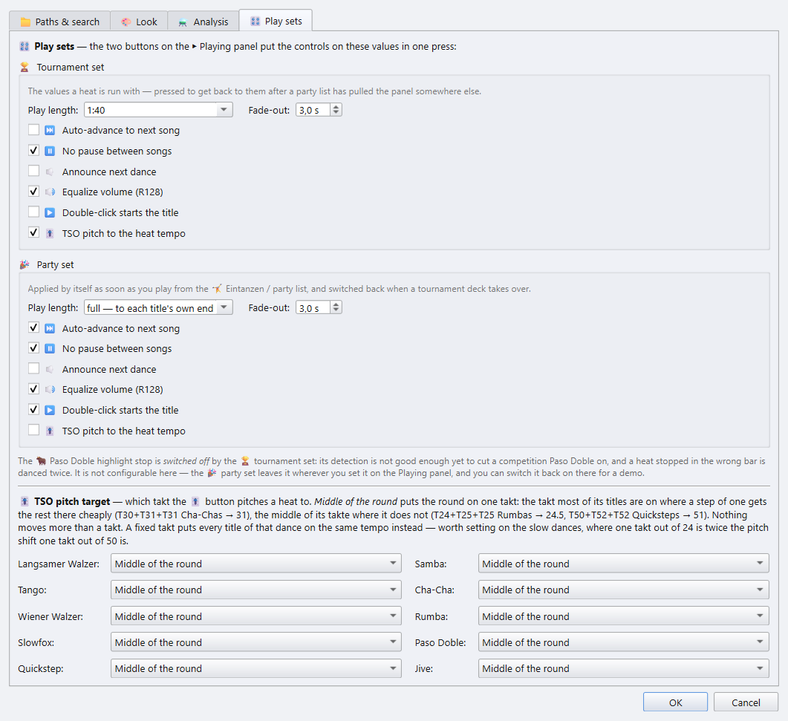
For each set:
- Play length: pick one, type
m:ssor seconds, or choose full. - Fade-out, in half-second steps.
- ⏭ Auto-advance, ⏸ No pause between songs, 🔈 Announce next dance, 🔊 Equalize volume, ▶️ Double-click starts the title and 🎚 TSO pitch to the heat tempo.
The tournament set always switches the 🐂 Paso Doble stop off: the detection is not reliable enough to cut a competition Paso Doble. The party set leaves it as it is.
🎚 TSO pitch target sets, per dance, the tempo the TSO button pitches a heat to:
- Middle of the round: puts the whole round on one tempo, where most of its titles already are. No title moves more than one bar per minute.
- Lower / Middle / Upper: a fixed tempo within the TSO range. This is worth setting for the slow dances, where one bar per minute is a much bigger pitch change.
Next: Keyboard and mouse
7 · Keyboard and mouse
Manual index · previous: Settings
F1 in the app shows the shortcuts as a cheat sheet.
Keyboard
| Keys | Does |
|---|---|
| Space | Pause and resume the player, wherever the focus is, except in a text field. |
| Ctrl + ← / → | Seek 30 s back / forward while playing. |
| Ctrl + Shift + ← / → | Previous / next title, the same as ⏮ / ⏭ on the player. ⏭ also ends a running pause. |
| Ctrl + S | Save the focused playlist or wishlist as M3U. |
| Ctrl + Shift + S | Save the whole session: decks, wishlists, layout. |
| Ctrl + Z / Ctrl + Y | Undo / redo. Ctrl + Shift + Z also redoes. |
| Ctrl + X or Ctrl + W | Close the active dialog. |
| Del | Remove the selected titles from a deck or wishlist, after asking. |
| Del with nothing selected | Clear that whole playlist or wishlist, after asking. The same when every title is selected. |
| Ctrl + Shift + Del | Clear the focused playlist or wishlist, after asking, wherever the cursor is. |
| Ctrl + M | Mark or unmark the selected titles (❗ orange), for example as titles to swap later. Ctrl + 1 does the same while the cartwall is hidden. |
| Alt + S | Swap the two selected titles of the same dance in the Party panel. |
| F2 in the 🏆 Tournaments tree | Rename the entry. Del removes it from the tree. |
| Ctrl + A in 🏆 Tournaments | Mark every slot of the folder, or every entry of the tree. Del and a drag then take them all. |
| Ctrl + F | Find a title in the focused list. Repeat to step to the next match. |
| T on the 🖥 presenter | Switch between the titles and the timetable page. |
| Esc on the 🖥 presenter | Close the presenter screen. |
| F1 | The cheat sheet. |
Mouse
| Action | Does |
|---|---|
| Click a round or dance header | Collapse or expand that section. |
| Double-click a deck title | Rename the playlist or wishlist. |
| ▾ / ▸ arrow in a deck header | Fold the deck to a header tab. Click the tab to reopen it. |
| Drag a row | Move a title within the list, to another deck or a wishlist, or drop it into Explorer or a DJ program. |
| Right-click ▸ 🔍 Find a title | Jump to a title by name. Repeat to step to the next match. |
| Drop a file from outside | Add it to the deck or wishlist where it was dropped. An .m3u dropped on a deck is imported. |
| ▶ / ■ in a row | Play / stop exactly that title. |
| Double-click a deck row | Play it, or only cue it, depending on ▶️ Double-click starts the title. |
| ▶ in a 📚 library row | Play the title. |
| Double-click a 📚 library row | Open the title in your external player. |
| Click a star in the ★ column | Rate the title. Click the star the rating ends on to clear it. |
| Double-click the 🖥 presenter | Leave full screen. |
Cartwall
| Action | Does |
|---|---|
| Drop files on a pad (✏ edit on) | Assign that sample. A multi-select fills the free pads after it. An empty pad can also be clicked to browse. |
| Click a pad | Fire it over the running music. Click again to fade it out. |
| Ctrl + 1 … Ctrl + 9 | Fire the first nine pads of the page on screen. This works from anywhere while the wall is shown. |
| Right-click a pad | 🎨 colour, or Settings… for label, volume, its own key, 🔁 endless repeat and whether it ducks the music. |
| Drag a pad onto another | Swap the two pads. |
| Esc | Stop every pad, the same as ⏹ Stop all. |
Back to the manual index.